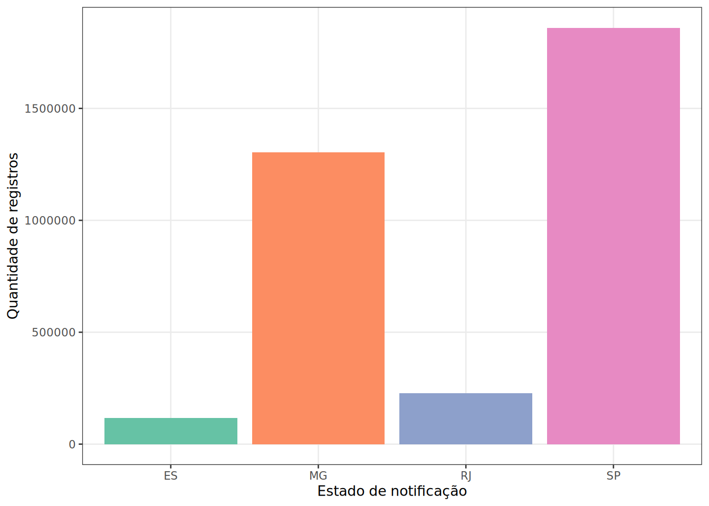
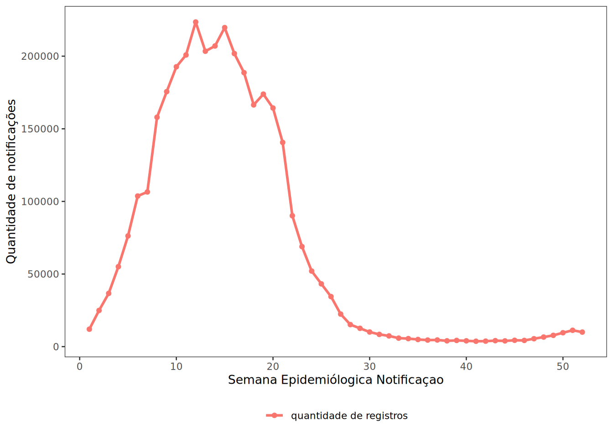
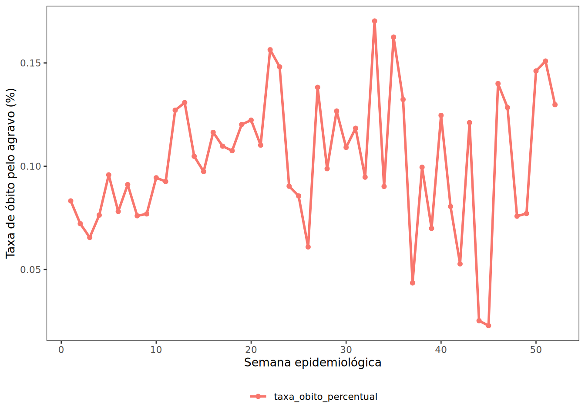
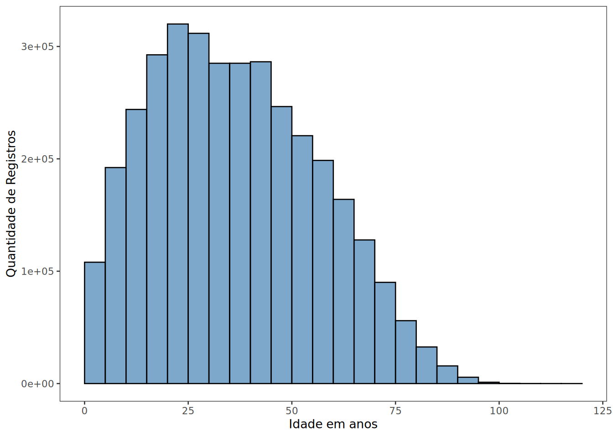
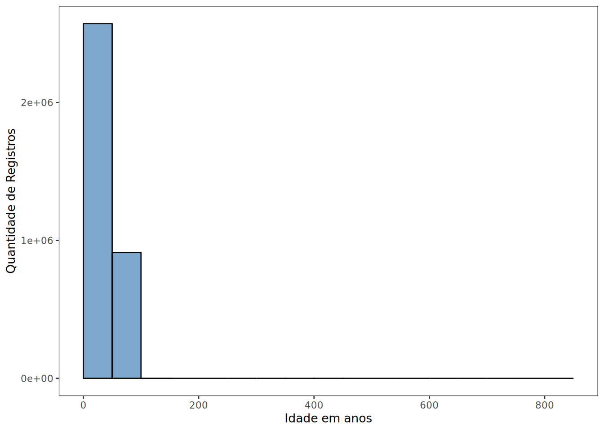
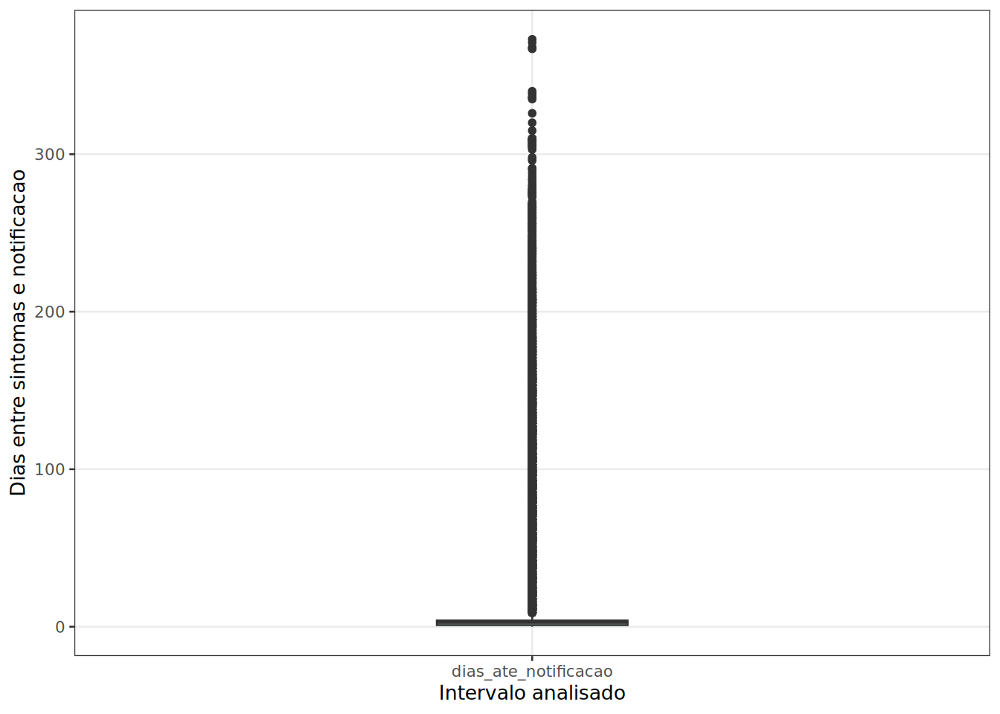

library(daltoolbox)
library(tidyr)
library(readr)
library(dplyr)
library(ggplot2)
library(stringr)
library(grDevices)
library(RColorBrewer)Trabalho de Mineração de Dados: Análise do Desfecho de Casos de Dengue na Região Sudeste do Brasil em 2024
##Carregando Bibliotecas
##Leitura da base
dados_dengue <- read_delim(
file = "dados/DENGBR24.csv",
delim = ",",
col_types = cols(.default = col_character()),
show_col_types = FALSE
)
#head(dados_dengue)##Caracteristicas da Base original
quantidade_linhas_original <- nrow(dados_dengue)
quantidade_colunas_original <- ncol(dados_dengue)
cat("Quantidade de linhas: ",quantidade_linhas_original,"\n")Quantidade de linhas: 6564924 cat("Quantidade de colunas: ",quantidade_colunas_original,"\n")Quantidade de colunas: 121 ##Criando Base com dados do Sudeste e Filtrando apenas os casos confirmados de óbito ou cura
dados_dengue_sudeste <- dados_dengue[
dados_dengue$SG_UF_NOT %in% c(33,32,35,31) &
dados_dengue$EVOLUCAO %in% c("1","2","3","4"),
]
quantidade_linhas_sudeste <- nrow(dados_dengue_sudeste)
quantidade_colunas_sudeste <- ncol(dados_dengue_sudeste)
cat("Quantiade de linhas: ",quantidade_linhas_sudeste,"\n")Quantiade de linhas: 3509184 cat("Quantidade de colunas: ",quantidade_colunas_sudeste,"\n")Quantidade de colunas: 121 ##Removendo objetos que nao serao mais usados
rm(dados_dengue)
gc() used (Mb) gc trigger (Mb) max used (Mb)
Ncells 3249455 173.6 6023780 321.8 4830928 258.0
Vcells 430088961 3281.4 1372231218 10469.3 1229664994 9381.6##tratando coluna idade
dados_dengue_sudeste <- dados_dengue_sudeste %>%
mutate(
unidade_idade = substr(NU_IDADE_N, 1, 1),
idade = as.numeric(substr(NU_IDADE_N, 2, 4))
)##criando coluna faixa etaria
dados_dengue_sudeste <- dados_dengue_sudeste %>%
mutate(
faixa_etaria = case_when(
unidade_idade != "4" ~ NA_character_,
idade < 1 ~ "Menor de 1 ano",
idade >= 1 & idade <= 4 ~ "1 a 4 anos",
idade >= 5 & idade <= 9 ~ "5 a 9 anos",
idade >= 10 & idade <= 19 ~ "10 a 19 anos",
idade >= 20 & idade <= 39 ~ "20 a 39 anos",
idade >= 40 & idade <= 59 ~ "40 a 59 anos",
idade >= 60 ~ "60 anos ou mais",
TRUE ~ NA_character_
)
)##valores faltantes por coluna da tabela
tabela_faltantes <- data.frame(
atributo = names(dados_dengue_sudeste),
quantidade_faltantes = colSums(is.na(dados_dengue_sudeste)),
total_valores_coluna = sapply(dados_dengue_sudeste, length)
) %>%
mutate(
percentual_faltantes = round(
quantidade_faltantes / total_valores_coluna * 100,
2
)
) %>%
arrange(desc(quantidade_faltantes))
tabela_faltantes atributo quantidade_faltantes total_valores_coluna
DT_CHIK_S2 DT_CHIK_S2 3509175 3509184
DT_PRNT DT_PRNT 3509004 3509184
DT_CHIK_S1 DT_CHIK_S1 3508081 3509184
DT_OBITO DT_OBITO 3504425 3509184
DT_GRAV DT_GRAV 3503514 3509184
DT_VIRAL DT_VIRAL 3501398 3509184
DT_ALRM DT_ALRM 3459022 3509184
DT_INTERNA DT_INTERNA 3438020 3509184
DOENCA_TRA DOENCA_TRA 3392718 3509184
MANI_HEMOR MANI_HEMOR 3392718 3509184
EPISTAXE EPISTAXE 3392718 3509184
GENGIVO GENGIVO 3392718 3509184
METRO METRO 3392718 3509184
PETEQUIAS PETEQUIAS 3392718 3509184
HEMATURA HEMATURA 3392718 3509184
SANGRAM SANGRAM 3392718 3509184
LACO_N LACO_N 3392718 3509184
PLASMATICO PLASMATICO 3392718 3509184
EVIDENCIA EVIDENCIA 3392718 3509184
PLAQ_MENOR PLAQ_MENOR 3392718 3509184
CON_FHD CON_FHD 3392718 3509184
COMPLICA COMPLICA 3392718 3509184
FLXRECEBI FLXRECEBI 3392717 3509184
MIGRADO_W MIGRADO_W 3392717 3509184
RESUL_PRNT RESUL_PRNT 3388498 3509184
RES_CHIKS2 RES_CHIKS2 3388492 3509184
RES_CHIKS1 RES_CHIKS1 3387821 3509184
GRAV_MIOC GRAV_MIOC 3387670 3509184
GRAV_AST GRAV_AST 3387667 3509184
GRAV_SANG GRAV_SANG 3387664 3509184
GRAV_ORGAO GRAV_ORGAO 3387663 3509184
GRAV_METRO GRAV_METRO 3387662 3509184
GRAV_CONSC GRAV_CONSC 3387656 3509184
GRAV_ENCH GRAV_ENCH 3387655 3509184
GRAV_MELEN GRAV_MELEN 3387655 3509184
GRAV_HIPOT GRAV_HIPOT 3387653 3509184
GRAV_CONV GRAV_CONV 3387652 3509184
GRAV_INSUF GRAV_INSUF 3387652 3509184
GRAV_HEMAT GRAV_HEMAT 3387650 3509184
GRAV_EXTRE GRAV_EXTRE 3387648 3509184
GRAV_PULSO GRAV_PULSO 3387644 3509184
GRAV_TAQUI GRAV_TAQUI 3387643 3509184
CLINC_CHIK CLINC_CHIK 3385277 3509184
NDUPLIC_N NDUPLIC_N 3383321 3509184
DT_PCR DT_PCR 3379660 3509184
ALRM_LIQ ALRM_LIQ 3343958 3509184
ALRM_HEPAT ALRM_HEPAT 3343947 3509184
ALRM_HEMAT ALRM_HEMAT 3343850 3509184
ALRM_VOM ALRM_VOM 3343821 3509184
ALRM_HIPOT ALRM_HIPOT 3343627 3509184
ALRM_PLAQ ALRM_PLAQ 3343610 3509184
ALRM_SANG ALRM_SANG 3343562 3509184
ALRM_LETAR ALRM_LETAR 3343408 3509184
ALRM_ABDOM ALRM_ABDOM 3343373 3509184
MUNICIPIO MUNICIPIO 3324607 3509184
UF UF 3323066 3509184
SOROTIPO SOROTIPO 3295697 3509184
DT_SORO DT_SORO 2940354 3509184
ID_OCUPA_N ID_OCUPA_N 2466480 3509184
DT_NS1 DT_NS1 2081113 3509184
HISTOPA_N HISTOPA_N 2032411 3509184
IMUNOH_N IMUNOH_N 2031496 3509184
RESUL_VI_N RESUL_VI_N 1832331 3509184
RESUL_PCR_ RESUL_PCR_ 1771106 3509184
RESUL_SORO RESUL_SORO 1429068 3509184
RESUL_NS1 RESUL_NS1 973553 3509184
COMUNINF COMUNINF 882983 3509184
COPAISINF COPAISINF 878190 3509184
COUFINF COUFINF 878187 3509184
TPAUTOCTO TPAUTOCTO 787663 3509184
HOSPITALIZ HOSPITALIZ 741619 3509184
CS_ESCOL_N CS_ESCOL_N 663819 3509184
ID_REGIONA ID_REGIONA 228216 3509184
ID_RG_RESI ID_RG_RESI 228092 3509184
TP_SISTEMA TP_SISTEMA 66341 3509184
DT_DIGITA DT_DIGITA 65462 3509184
faixa_etaria faixa_etaria 24978 3509184
ANO_NASC ANO_NASC 14784 3509184
DT_ENCERRA DT_ENCERRA 4071 3509184
CRITERIO CRITERIO 2185 3509184
CS_FLXRET CS_FLXRET 735 3509184
CS_GESTANT CS_GESTANT 457 3509184
ID_UNIDADE ID_UNIDADE 448 3509184
FEBRE FEBRE 33 3509184
MIALGIA MIALGIA 33 3509184
CEFALEIA CEFALEIA 33 3509184
EXANTEMA EXANTEMA 33 3509184
VOMITO VOMITO 33 3509184
NAUSEA NAUSEA 33 3509184
DOR_COSTAS DOR_COSTAS 33 3509184
CONJUNTVIT CONJUNTVIT 33 3509184
ARTRITE ARTRITE 33 3509184
ARTRALGIA ARTRALGIA 33 3509184
PETEQUIA_N PETEQUIA_N 33 3509184
LEUCOPENIA LEUCOPENIA 33 3509184
LACO LACO 33 3509184
DOR_RETRO DOR_RETRO 33 3509184
DIABETES DIABETES 33 3509184
HEMATOLOG HEMATOLOG 33 3509184
HEPATOPAT HEPATOPAT 33 3509184
RENAL RENAL 33 3509184
HIPERTENSA HIPERTENSA 33 3509184
ACIDO_PEPT ACIDO_PEPT 33 3509184
AUTO_IMUNE AUTO_IMUNE 33 3509184
CLASSI_FIN CLASSI_FIN 19 3509184
CS_SEXO CS_SEXO 5 3509184
CS_RACA CS_RACA 4 3509184
ID_MN_RESI ID_MN_RESI 4 3509184
idade idade 3 3509184
ID_PAIS ID_PAIS 1 3509184
TP_NOT TP_NOT 0 3509184
ID_AGRAVO ID_AGRAVO 0 3509184
DT_NOTIFIC DT_NOTIFIC 0 3509184
SEM_NOT SEM_NOT 0 3509184
NU_ANO NU_ANO 0 3509184
SG_UF_NOT SG_UF_NOT 0 3509184
ID_MUNICIP ID_MUNICIP 0 3509184
DT_SIN_PRI DT_SIN_PRI 0 3509184
SEM_PRI SEM_PRI 0 3509184
NU_IDADE_N NU_IDADE_N 0 3509184
SG_UF SG_UF 0 3509184
DT_INVEST DT_INVEST 0 3509184
EVOLUCAO EVOLUCAO 0 3509184
unidade_idade unidade_idade 0 3509184
percentual_faltantes
DT_CHIK_S2 100.00
DT_PRNT 99.99
DT_CHIK_S1 99.97
DT_OBITO 99.86
DT_GRAV 99.84
DT_VIRAL 99.78
DT_ALRM 98.57
DT_INTERNA 97.97
DOENCA_TRA 96.68
MANI_HEMOR 96.68
EPISTAXE 96.68
GENGIVO 96.68
METRO 96.68
PETEQUIAS 96.68
HEMATURA 96.68
SANGRAM 96.68
LACO_N 96.68
PLASMATICO 96.68
EVIDENCIA 96.68
PLAQ_MENOR 96.68
CON_FHD 96.68
COMPLICA 96.68
FLXRECEBI 96.68
MIGRADO_W 96.68
RESUL_PRNT 96.56
RES_CHIKS2 96.56
RES_CHIKS1 96.54
GRAV_MIOC 96.54
GRAV_AST 96.54
GRAV_SANG 96.54
GRAV_ORGAO 96.54
GRAV_METRO 96.54
GRAV_CONSC 96.54
GRAV_ENCH 96.54
GRAV_MELEN 96.54
GRAV_HIPOT 96.54
GRAV_CONV 96.54
GRAV_INSUF 96.54
GRAV_HEMAT 96.54
GRAV_EXTRE 96.54
GRAV_PULSO 96.54
GRAV_TAQUI 96.54
CLINC_CHIK 96.47
NDUPLIC_N 96.41
DT_PCR 96.31
ALRM_LIQ 95.29
ALRM_HEPAT 95.29
ALRM_HEMAT 95.29
ALRM_VOM 95.29
ALRM_HIPOT 95.28
ALRM_PLAQ 95.28
ALRM_SANG 95.28
ALRM_LETAR 95.28
ALRM_ABDOM 95.27
MUNICIPIO 94.74
UF 94.70
SOROTIPO 93.92
DT_SORO 83.79
ID_OCUPA_N 70.29
DT_NS1 59.30
HISTOPA_N 57.92
IMUNOH_N 57.89
RESUL_VI_N 52.22
RESUL_PCR_ 50.47
RESUL_SORO 40.72
RESUL_NS1 27.74
COMUNINF 25.16
COPAISINF 25.03
COUFINF 25.03
TPAUTOCTO 22.45
HOSPITALIZ 21.13
CS_ESCOL_N 18.92
ID_REGIONA 6.50
ID_RG_RESI 6.50
TP_SISTEMA 1.89
DT_DIGITA 1.87
faixa_etaria 0.71
ANO_NASC 0.42
DT_ENCERRA 0.12
CRITERIO 0.06
CS_FLXRET 0.02
CS_GESTANT 0.01
ID_UNIDADE 0.01
FEBRE 0.00
MIALGIA 0.00
CEFALEIA 0.00
EXANTEMA 0.00
VOMITO 0.00
NAUSEA 0.00
DOR_COSTAS 0.00
CONJUNTVIT 0.00
ARTRITE 0.00
ARTRALGIA 0.00
PETEQUIA_N 0.00
LEUCOPENIA 0.00
LACO 0.00
DOR_RETRO 0.00
DIABETES 0.00
HEMATOLOG 0.00
HEPATOPAT 0.00
RENAL 0.00
HIPERTENSA 0.00
ACIDO_PEPT 0.00
AUTO_IMUNE 0.00
CLASSI_FIN 0.00
CS_SEXO 0.00
CS_RACA 0.00
ID_MN_RESI 0.00
idade 0.00
ID_PAIS 0.00
TP_NOT 0.00
ID_AGRAVO 0.00
DT_NOTIFIC 0.00
SEM_NOT 0.00
NU_ANO 0.00
SG_UF_NOT 0.00
ID_MUNICIP 0.00
DT_SIN_PRI 0.00
SEM_PRI 0.00
NU_IDADE_N 0.00
SG_UF 0.00
DT_INVEST 0.00
EVOLUCAO 0.00
unidade_idade 0.00rm(tabela_faltantes)
gc() used (Mb) gc trigger (Mb) max used (Mb)
Ncells 3278677 175.2 6023780 321.8 4830928 258.0
Vcells 440678091 3362.2 1372231218 10469.3 1229664994 9381.6##Linhas em duplicidade
#quantidade_linhas_duplicadas <- sum(duplicated(dados_dengue_sudeste))
#quantidade_linhas_duplicadas##Estatisticas Descritivas
##Frequencia absoluta e relativa com relacao aos obitos e curas
frequencia_evolucao <- dados_dengue_sudeste %>%
count(EVOLUCAO, name = "frequencia_absoluta") %>%
mutate(
descricao_evolucao = case_when(
EVOLUCAO == "1" ~ "Cura",
EVOLUCAO == "2" ~ "Óbito pelo agravo",
EVOLUCAO == "3" ~ "Óbito por outras causas",
EVOLUCAO == "4" ~ "Óbito em investigação",
EVOLUCAO == "9" ~ "Ignorado",
is.na(EVOLUCAO) ~ "Ausente",
TRUE ~ "Outro código"
),
frequencia_relativa = round(
frequencia_absoluta / sum(frequencia_absoluta) * 100,
2
)
) %>%
select(
EVOLUCAO,
descricao_evolucao,
frequencia_absoluta,
frequencia_relativa
) %>%
arrange(EVOLUCAO)
frequencia_evolucao# A tibble: 4 × 4
EVOLUCAO descricao_evolucao frequencia_absoluta frequencia_relativa
<chr> <chr> <int> <dbl>
1 1 Cura 3504428 99.9
2 2 Óbito pelo agravo 3696 0.11
3 3 Óbito por outras causas 807 0.02
4 4 Óbito em investigação 253 0.01rm(frequencia_evolucao)
gc() used (Mb) gc trigger (Mb) max used (Mb)
Ncells 3336079 178.2 6023780 321.8 4830928 258.0
Vcells 440805478 3363.1 1372231218 10469.3 1229664994 9381.6##Quartis das notificacoes no ano 2024
quartis_notificacoes <- dados_dengue_sudeste %>%
mutate(SEM_NOT = as.numeric(SEM_NOT)) %>%
filter(!is.na(SEM_NOT)) %>%
count(SEM_NOT, name = "quantidade_notificacoes") %>%
arrange(SEM_NOT) %>%
mutate(
notificacoes_acumuladas = cumsum(quantidade_notificacoes),
percentual_acumulado = notificacoes_acumuladas /
sum(quantidade_notificacoes) * 100
) %>%
summarise(
semana_25_porcento = min(SEM_NOT[percentual_acumulado >= 25]),
semana_mediana_50_porcento = min(SEM_NOT[percentual_acumulado >= 50]),
semana_75_porcento = min(SEM_NOT[percentual_acumulado >= 75])
)
quartis_notificacoes# A tibble: 1 × 3
semana_25_porcento semana_mediana_50_porcento semana_75_porcento
<dbl> <dbl> <dbl>
1 202410 202414 202419rm(quartis_notificacoes)
gc() used (Mb) gc trigger (Mb) max used (Mb)
Ncells 3338096 178.3 6023780 321.8 4830928 258.0
Vcells 440810134 3363.2 1372231218 10469.3 1229664994 9381.6##Tempo medio entre inicio dos sintomas e notificacao
estatisticas_tempo_notificacao <- dados_dengue_sudeste %>%
mutate(
data_notificacao = as.Date(DT_NOTIFIC),
data_primeiros_sintomas = as.Date(DT_SIN_PRI),
dias_ate_notificacao = as.numeric(
data_notificacao - data_primeiros_sintomas
)
) %>%
filter(
!is.na(dias_ate_notificacao),
dias_ate_notificacao >= 0
) %>%
summarise(
media_dias = round(mean(dias_ate_notificacao, na.rm = TRUE), 2),
mediana_dias = stats::median(dias_ate_notificacao, na.rm = TRUE),
desvio_padrao_dias = round(stats::sd(dias_ate_notificacao, na.rm = TRUE), 2),
minimo_dias = min(dias_ate_notificacao, na.rm = TRUE),
maximo_dias = max(dias_ate_notificacao, na.rm = TRUE)
)
estatisticas_tempo_notificacao# A tibble: 1 × 5
media_dias mediana_dias desvio_padrao_dias minimo_dias maximo_dias
<dbl> <dbl> <dbl> <dbl> <dbl>
1 4.71 3 11.0 0 373rm(estatisticas_tempo_notificacao)
gc() used (Mb) gc trigger (Mb) max used (Mb)
Ncells 3340190 178.4 6023780 321.8 4830928 258.0
Vcells 440814797 3363.2 1372231218 10469.3 1229664994 9381.6##Proporçao de Notificacoes por Estado
proporcao_por_estado_notificacao <- dados_dengue_sudeste %>%
mutate(
estado_notificacao = case_when(
SG_UF_NOT == "31" ~ "MG",
SG_UF_NOT == "32" ~ "ES",
SG_UF_NOT == "33" ~ "RJ",
SG_UF_NOT == "35" ~ "SP",
TRUE ~ NA_character_
)
) %>%
filter(!is.na(estado_notificacao)) %>%
count(estado_notificacao, name = "quantidade_registros") %>%
mutate(
percentual = round(
quantidade_registros / sum(quantidade_registros) * 100,
2
)
) %>%
arrange(desc(quantidade_registros))
proporcao_por_estado_notificacao# A tibble: 4 × 3
estado_notificacao quantidade_registros percentual
<chr> <int> <dbl>
1 SP 1860212 53.0
2 MG 1303554 37.2
3 RJ 228216 6.5
4 ES 117202 3.34rm(proporcao_por_estado_notificacao)
gc() used (Mb) gc trigger (Mb) max used (Mb)
Ncells 3340219 178.4 6023780 321.8 4830928 258.0
Vcells 440814981 3363.2 1372231218 10469.3 1229664994 9381.6##Estatistica sobre a idade
estatisticas_idade <- dados_dengue_sudeste %>%
filter(
unidade_idade == "4",
!is.na(idade),
idade >= 0,
idade <= 120
) %>%
summarise(
media = round(mean(idade), 2),
mediana = stats::median(idade),
desvio_padrao = round(stats::sd(idade), 2),
minimo = min(idade),
primeiro_quartil = stats::quantile(idade, 0.25),
terceiro_quartil = stats::quantile(idade, 0.75),
maximo = max(idade)
)
estatisticas_idade# A tibble: 1 × 7
media mediana desvio_padrao minimo primeiro_quartil terceiro_quartil maximo
<dbl> <dbl> <dbl> <dbl> <dbl> <dbl> <dbl>
1 36.9 35 19.9 0 21 51 120rm(estatisticas_idade)
gc() used (Mb) gc trigger (Mb) max used (Mb)
Ncells 3341593 178.5 6023780 321.8 4830928 258.0
Vcells 440818231 3363.2 1372231218 10469.3 1229664994 9381.6##Visualizacoes Relevantes
# ------------------------------------------------------------
# Gráfico de barras empilhadas:
# evolução dos casos por estado de notificação
# ------------------------------------------------------------
cores_estado <- brewer.pal(4,"Set2")
grafico_evolucao_estado <- dados_dengue_sudeste %>%
mutate(
estado_notificacao = case_when(
SG_UF_NOT == "31" ~ "MG",
SG_UF_NOT == "32" ~ "ES",
SG_UF_NOT == "33" ~ "RJ",
SG_UF_NOT == "35" ~ "SP",
TRUE ~ NA_character_
)
) %>%
filter(
!is.na(estado_notificacao),
#!is.na(desfecho)
) %>%
count(estado_notificacao, name = "quantidade_registros")
grf <- plot_bar(
grafico_evolucao_estado,
colors = cores_estado,
label_x = "Estado de notificação",
label_y = "Quantidade de registros"
)
plot(grf)
##Grafico de linha notificacoes por semana epidemiologica
grafico_notificacoes_semana <- dados_dengue_sudeste %>%
mutate(
semana_epidemiologica = as.numeric(substr(SEM_NOT,5,6))
) %>%
filter(!is.na(semana_epidemiologica)) %>%
count(semana_epidemiologica, name = "quantidade de registros") %>%
arrange(semana_epidemiologica)
grf <- plot_series(
grafico_notificacoes_semana,
label_x = "Semana Epidemiólogica Notificaçao",
label_y = "Quantidade de notificações"
)
plot(grf)
##Taxa semanal de óbitos pelo agravo
grafico_taxa_obito_semana <- dados_dengue_sudeste %>%
mutate(
semana_epidemiologica = as.numeric(substr(SEM_NOT, 5, 6))
) %>%
filter(
!is.na(semana_epidemiologica),
EVOLUCAO %in% c("1", "2", "3", "4")
) %>%
group_by(semana_epidemiologica) %>%
summarise(
total_com_evolucao = n(),
obitos_pelo_agravo = sum(EVOLUCAO == "2"),
taxa_obito_percentual = round(
obitos_pelo_agravo / total_com_evolucao * 100,
4
),
.groups = "drop"
) %>%
arrange(semana_epidemiologica)
grf <- plot_series(
grafico_taxa_obito_semana %>%
select(semana_epidemiologica, taxa_obito_percentual),
label_x = "Semana epidemiológica",
label_y = "Taxa de óbito pelo agravo (%)"
)
plot(grf)
##Histograma da idade dos pacientes até 120 anos
dados_idade_grafico <- dados_dengue_sudeste %>%
filter(
unidade_idade == "4",
!is.na(idade),
idade >=0,
idade <= 120
)%>%
select(idade)
grf <- plot_hist(
dados_idade_grafico,
label_x = "Idade em anos",
label_y = "Quantidade de Registros",
color = "steelblue",
alpha = 0.7
)
plot(grf)
##Histograma completo
dados_idade_grafico <- dados_dengue_sudeste %>%
filter(
unidade_idade == "4",
!is.na(idade),
idade >=0
)%>%
select(idade)
grf <- plot_hist(
dados_idade_grafico,
label_x = "Idade em anos",
label_y = "Quantidade de Registros",
color = "steelblue",
alpha = 0.7
)
plot(grf)
##Boxplot tempo entre sintomas e notificacao
dados_tempo_notificacao <- dados_dengue_sudeste %>%
mutate(
data_notificacao = as.Date(DT_NOTIFIC),
data_primeiros_sintomas = as.Date(DT_SIN_PRI),
dias_ate_notificacao = as.numeric( data_notificacao - data_primeiros_sintomas)
)%>%
filter(
!is.na(dias_ate_notificacao),
dias_ate_notificacao>=0
)%>%
select(dias_ate_notificacao)
grf <- plot_boxplot(
dados_tempo_notificacao,
label_x = "Intervalo analisado",
label_y = "Dias entre sintomas e notificacao",
colors = "lightblue"
)
plot(grf)